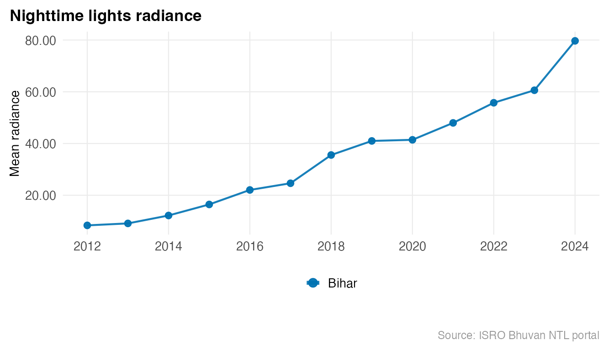
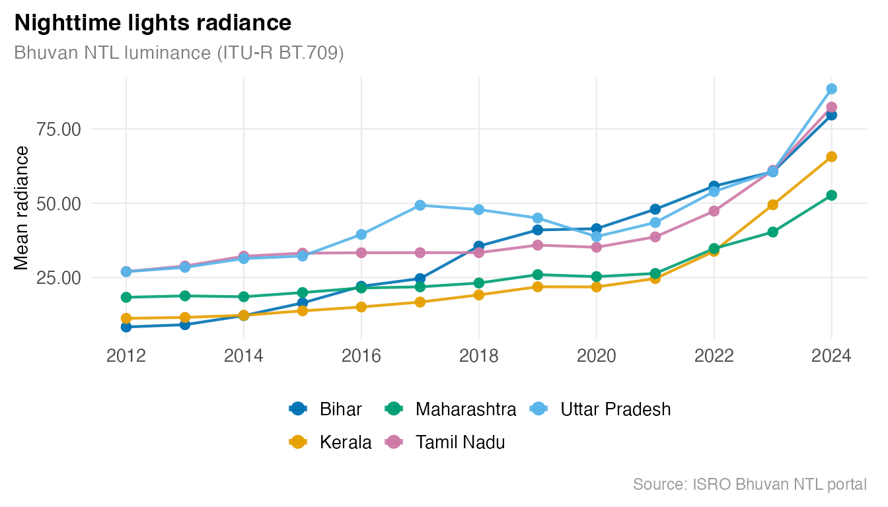
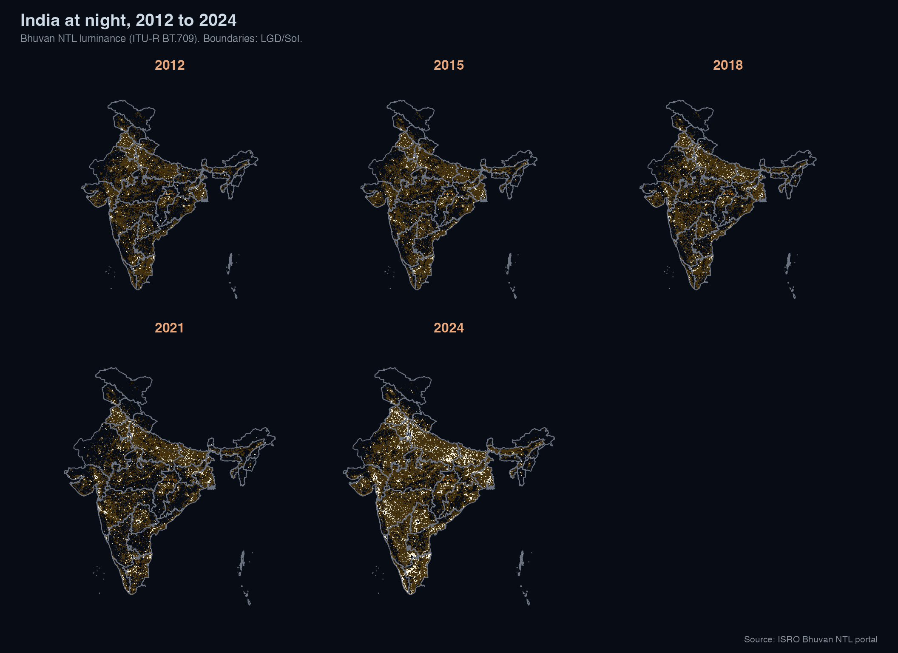

ISRO’s Bhuvan NTL portal provides pre-aggregated mean radiance for all Indian states from 2012 to 2024, and WMS raster tiles for any custom region, with no authentication required.
All states, all years
library(lightson)
df <- bhuvan_stats()
#> Warning: Your request spans a collection break in the Bhuvan NTL data:
#> 2012-2023 uses VNP46A4 Collection 1.0 and 2024 onwards uses Collection 2.0.
#> Radiance estimates are not directly comparable across this boundary. Treat any
#> 2023-to-2024 trend as an artefact of the collection change, not a real-world
#> signal.
dim(df)
#> [1] 481 3
head(df)
#> state year mean_radiance
#> 1 Andaman & Nicobar 2012 2.28
#> 2 Andhra Pradesh 2012 12.05
#> 3 Arunachal Pradesh 2012 0.78
#> 4 Assam 2012 10.81
#> 5 Bihar 2012 8.36
#> 6 Chandigarh 2012 1100.69Single state time series
bihar <- bhuvan_stats(state = "BIHAR")
#> Warning: Your request spans a collection break in the Bhuvan NTL data:
#> 2012-2023 uses VNP46A4 Collection 1.0 and 2024 onwards uses Collection 2.0.
#> Radiance estimates are not directly comparable across this boundary. Treat any
#> 2023-to-2024 trend as an artefact of the collection change, not a real-world
#> signal.
bihar
#> state year mean_radiance
#> 1 Bihar 2012 8.36
#> 2 Bihar 2013 9.12
#> 3 Bihar 2014 12.18
#> 4 Bihar 2015 16.45
#> 5 Bihar 2016 22.05
#> 6 Bihar 2017 24.64
#> 7 Bihar 2018 35.56
#> 8 Bihar 2019 41.00
#> 9 Bihar 2020 41.43
#> 10 Bihar 2021 47.97
#> 11 Bihar 2022 55.75
#> 12 Bihar 2023 60.59
#> 13 Bihar 2024 79.68
library(ggplot2)
plot_ntl_trend(bihar,
region = "Bihar",
caption = "Source: ISRO Bhuvan NTL portal"
)
Radiance nearly 10x from 2012 to 2024.
Compare states
states <- c("Bihar", "Maharashtra", "Tamil Nadu", "Uttar Pradesh", "Kerala")
plot_ntl_trend(
df[df$state %in% states, ],
region = states,
subtitle = "Bhuvan NTL luminance (ITU-R BT.709)",
caption = "Source: ISRO Bhuvan NTL portal"
)
Nighttime India from space, 2012 to 2024
states_sf <- get_india_admin("state")
years_sel <- c(2012, 2015, 2018, 2021, 2024)
rasters <- bhuvan_raster("IND", years = years_sel, bbox_pad = c(0, 0, 0, 3.5))
#> Warning: Your request spans a collection break in the Bhuvan NTL data:
#> 2012-2023 uses VNP46A4 Collection 1.0 and 2024 onwards uses Collection 2.0.
#> Radiance estimates are not directly comparable across this boundary. Treat any
#> 2023-to-2024 trend as an artefact of the collection change, not a real-world
#> signal.
#> Using cached: bhuvan_9a24aa4b1d43_2012.tif
#> Using cached: bhuvan_9a24aa4b1d43_2015.tif
#> Using cached: bhuvan_9a24aa4b1d43_2018.tif
#> Using cached: bhuvan_9a24aa4b1d43_2021.tif
#> Using cached: bhuvan_9a24aa4b1d43_2024.tif
if (length(rasters) == 0) stop("No rasters downloaded. Check network / Bhuvan WMS.")
plot_ntl_panel(
rasters,
polygons = states_sf,
title = "India at night, 2012 to 2024",
subtitle = "Bhuvan NTL luminance (ITU-R BT.709). Boundaries: LGD/SoI.",
caption = "Source: ISRO Bhuvan NTL portal",
ncol = 3L
)
#> Warning: Raster pixels are placed at uneven horizontal intervals and will be shifted
#> ℹ Consider using `geom_tile()` instead.
#> Raster pixels are placed at uneven horizontal intervals and will be shifted
#> ℹ Consider using `geom_tile()` instead.
#> Raster pixels are placed at uneven horizontal intervals and will be shifted
#> ℹ Consider using `geom_tile()` instead.
#> Raster pixels are placed at uneven horizontal intervals and will be shifted
#> ℹ Consider using `geom_tile()` instead.
#> Raster pixels are placed at uneven horizontal intervals and will be shifted
#> ℹ Consider using `geom_tile()` instead.
#> Raster pixels are placed at uneven horizontal intervals and will be shifted
#> ℹ Consider using `geom_tile()` instead.
#> Raster pixels are placed at uneven horizontal intervals and will be shifted
#> ℹ Consider using `geom_tile()` instead.
#> Raster pixels are placed at uneven horizontal intervals and will be shifted
#> ℹ Consider using `geom_tile()` instead.
#> Raster pixels are placed at uneven horizontal intervals and will be shifted
#> ℹ Consider using `geom_tile()` instead.
Each panel uses the same luminance scale anchored at zero, so brightness is comparable across years. The sharpest gains are in Bihar, UP, and Odisha after 2015, broadly tracking the Saubhagya electrification scheme (2017-2019).
Filter by year range
post_2015 <- bhuvan_stats(years = 2015:2024)
#> Warning: Your request spans a collection break in the Bhuvan NTL data:
#> 2012-2023 uses VNP46A4 Collection 1.0 and 2024 onwards uses Collection 2.0.
#> Radiance estimates are not directly comparable across this boundary. Treat any
#> 2023-to-2024 trend as an artefact of the collection change, not a real-world
#> signal.
nrow(post_2015)
#> [1] 370